🐠La Pecera🐠
La cocina de La Pecera te da una sensación de emociones con preparaciones innovadoras, exquisitas y sabores unicos que evocan de los siete mares y te sumergen en un mundo espectacular, además puedes gozar de pezca deportiva que te ofrecemos en nuestras instalaciones.
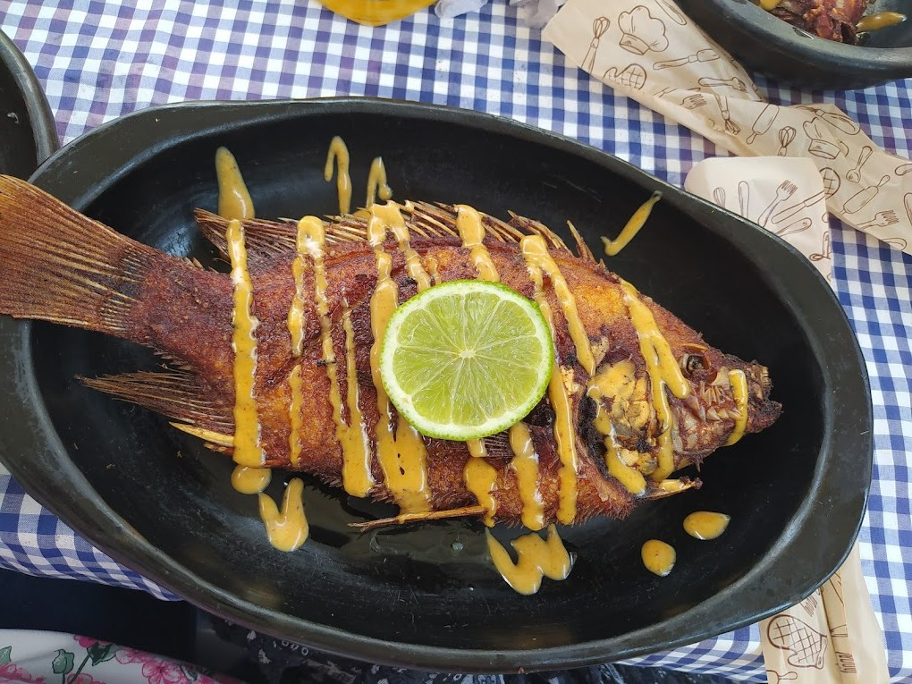🤷¿Quienes somos?🤷♀️
En La Pecera, creemos que el pescado no es solo un alimento, sino una tradición que une a las familias y honra el trabajo del mar. Nacimos con el propósito de ofrecer lo mejor de la pezca en cada plato, trabajando con ingredientes frescos, técnicas tradicionales y un profundo respeto por la cocina. Somos un equipo apasionado por el sabor auténtico del pescado, comprometido con la calidad, el buen servicio y el respeto a nuestros clientes. Cada receta que servimos cuenta una historia: la del mar, la de nuestros cocineros, y la de todos los que disfrutan del buen comer.


🎣Servicios y/o Productos🎣
-Pesca Deportiva:
Disfruta de una experiencia única en el mar con nuestra actividad de pesca deportiva, para que puedas capturar especies locales, vivir la emoción del océano y luego saborear lo que pescaste, preparado por nuestros chefs.
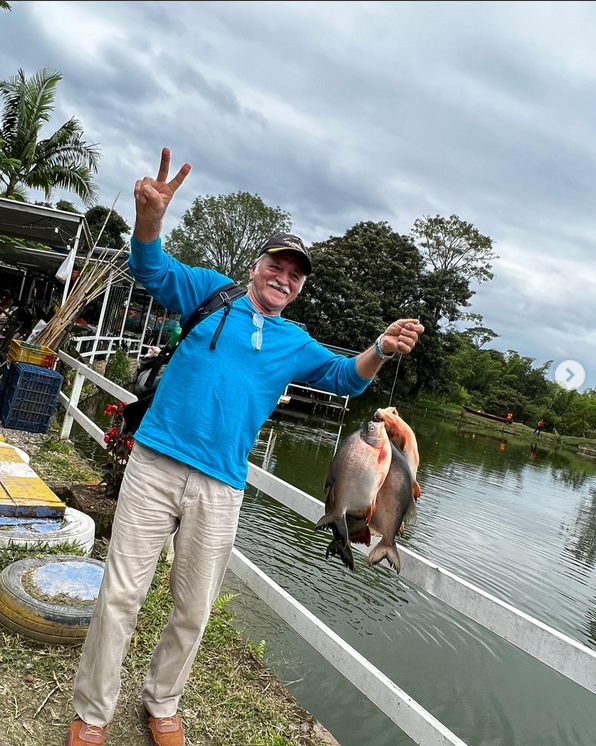🎉 -Diversión en Grande con Nuestras Burbujas Gigantes:
¿Listo para reír, correr y rodar sin parar? En nuestro restaurante no solo disfrutas del mejor sabor del mar, también te invitamos a vivir momentos inolvidables con nuestras burbujas inflables gigantes.
Menú:
Después de girar y correr sabemos que estas cansado, por qué no vamos y comemos algo para recargar energía y volvemos al ruedo. La Pecera te ofrece un delicioso pescado, además, también tenemos una gran variedad de carnes y platos con marisco:
- Carnes
- Peces y Mariscos
- Entradas
-Baby Beaf: (Papas casco, Maduro Melado y Ensalada)
-Punta de Anca: (Papas Casco, Maduro Melado y Ensalad Dulce)
-Lomo de Res: (Papas Casco, Maduro Melado y Ensalad Dulce)
-Lomo de Cerdo: (Papas Casco, Maduro Melado y Ensalad Dulce)
-Pechuga a la Parilla: (Papas Casco, Maduro Melado y Ensalad Dulce)
-Viudo de Bocachico: (Papas, Yuca, Plátano, Sancocho, Arroz y Aguacate)
-Bocachico Frito: (Arroz, Yuca Frita y Ensalada de la Casa)
-Viudo de Capaz: (Papas, Yuca, Plátano, Sancocho, Arroz y Aguacate)
-Bagre en Salsa Criolla: (Papas, Mauro Melado, Arroz y Ensalada)
-Bagre a La Marinera: (Arroz y Patacón)
-Trucha a La Parilla: (Arroz, Ensalada y Patacón)
-Trucha a La Marinera: (Arroz, Patacón y Ensalada)
-Salmón a La Parilla: (Papas casco, maduro Melado y Ensalada)
-Salmón a La Marinera: (Arroz y Patacón)
-Salmón en Salsa Maracuyá: (Arroz, Ensalada de La Casa y Papa Casco)
-Mojarra Frita: (Arroz, Patacón y Ensalada)
-Cazuela de Mariscos: (Arroz y Patacón)
-Ceviche de Camarones: (Patacón)
-Patacón con Hogao
-Patacón con Camarones
🐚Descripción De Procesos:🐚
En nuestro restaurante, cada plato que llega a tu mesa es el resultado de un proceso cuidadosamente diseñado. Comenzamos seleccionando ingredientes frescos y de origen local, priorizando productos del mar de alta calidad. Una vez en cocina, seguimos protocolos estrictos de higiene y seguridad, y aplicamos técnicas culinarias que conservan los sabores naturales de cada especie. Cocinamos con pasión, respetando tradiciones costeras y usando condimentos naturales.Finalmente, cuidamos cada detalle en la presentación y atención al cliente, para que tu experiencia sea tan memorable como deliciosa.
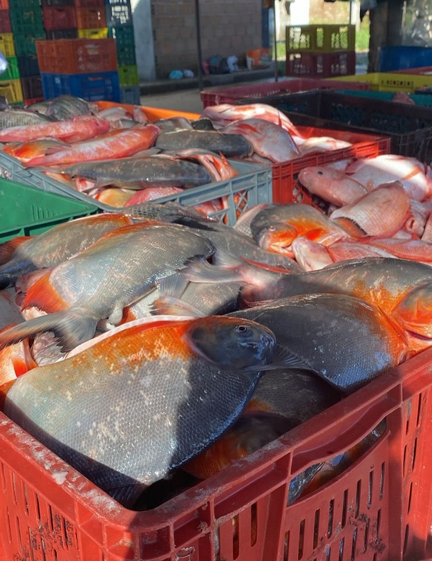 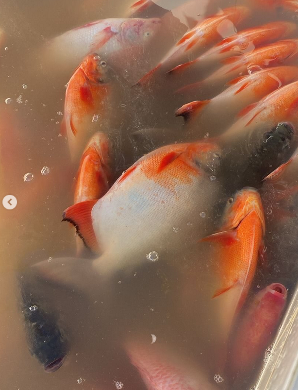 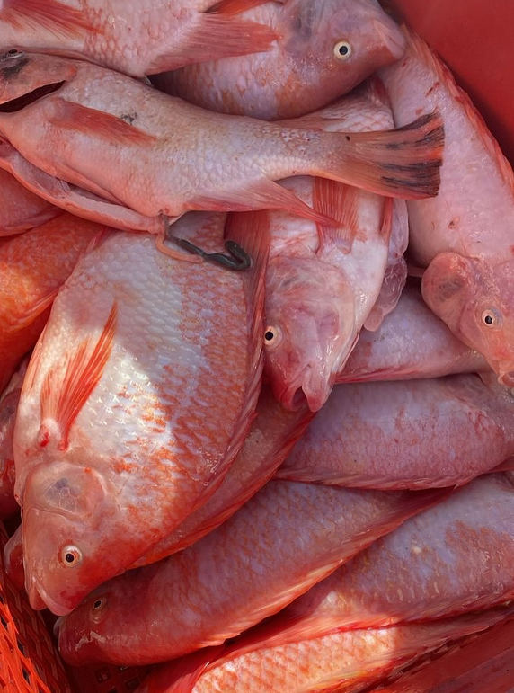📸Galería de Fotos:📸
La Pecera tiene sus momento buenos y malos, sin embargo, siempre estaremos al servicio del cliente y del cuidado de nuestro personal, aquí te dejamos una galería de fotos de los mejores momentos en nuestro eventos con nuestros clientes...
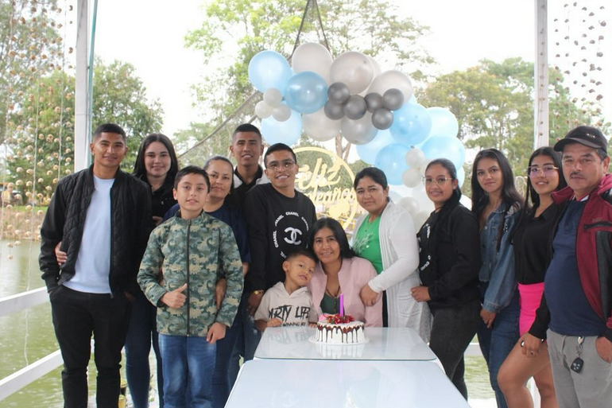 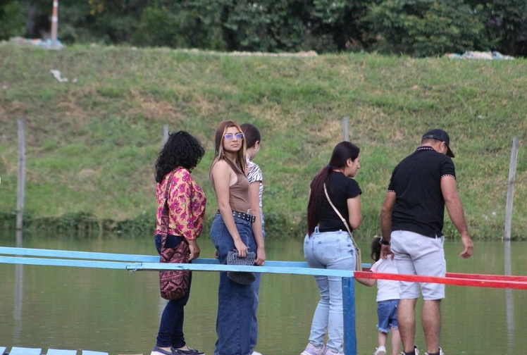 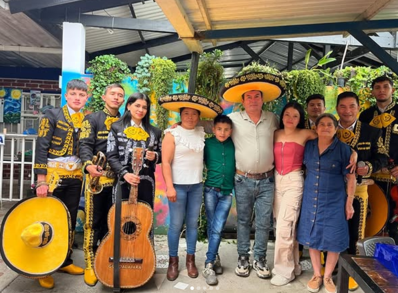 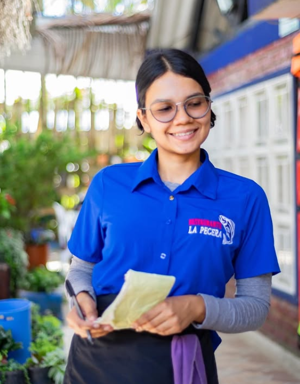 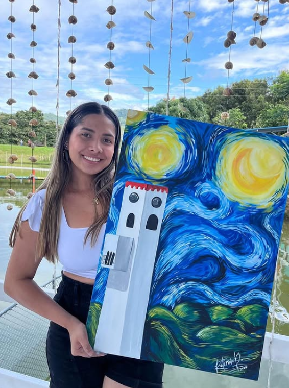 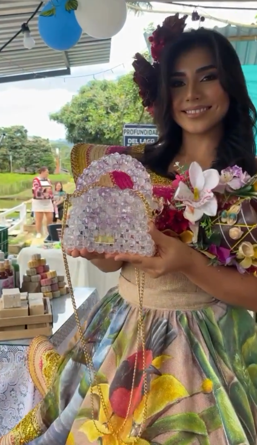 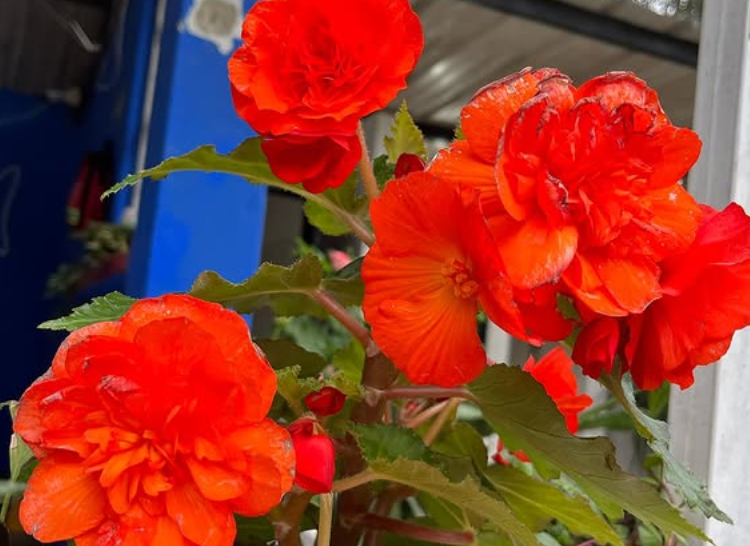📞Contacto📞
¿Tienes preguntas, deseas hacer una reserva o quieres más información sobre nuestros platos y servicios?
Contáctanos por el medio que prefieras, estaremos encantados de ayudarte.
📍 Dirección: La Pecera - Km 1 Vía Mocoa
📞 Reservas: 3132225076
🕐 Horarios de atención:
Lunes a Domingo - 12:00 p.m. a 4:00 p.m.
📲 Teléfono / WhatsApp: 3132225076
🌐 Redes sociales:

📩Formulario de Sugerencias📩
En La Pecera, trabajamos cada día para ofrecerte una experiencia deliciosa y memorable.
Si tienes alguna sugerencia, comentario o idea para mejorar, este espacio es para ti.
Completa el siguiente formulario y cuéntanos cómo podemos hacerlo mejor.
Tu opinión es clave para seguir creciendo y brindarte el mejor sabor del mar con el mejor servicio.
¡Gracias por ser parte de nuestra evolución!